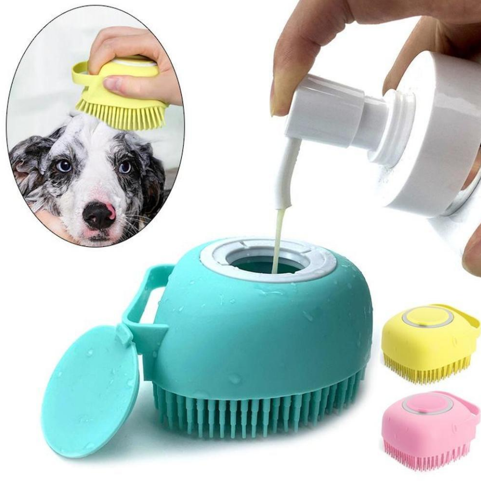

|  |
Peine con champúFacilita el baño de tu mascota con nuestro innovador peine aplicador de champú para perros. Este dispositivo práctico combina la acción del peinado con la aplicación uniforme de champú, simplificando el proceso de limpieza. El depósito integrado te permite dispensar el champú de manera controlada, asegurando una cobertura completa y eficiente. Con cerdas suaves y eficaces, este peine no solo desenreda el pelaje, sino que también proporciona una experiencia de baño más cómoda para tu perro. Simplifica y mejora la rutina de aseo de tu mascota con este peine innovador y funcional. 6.99€ |